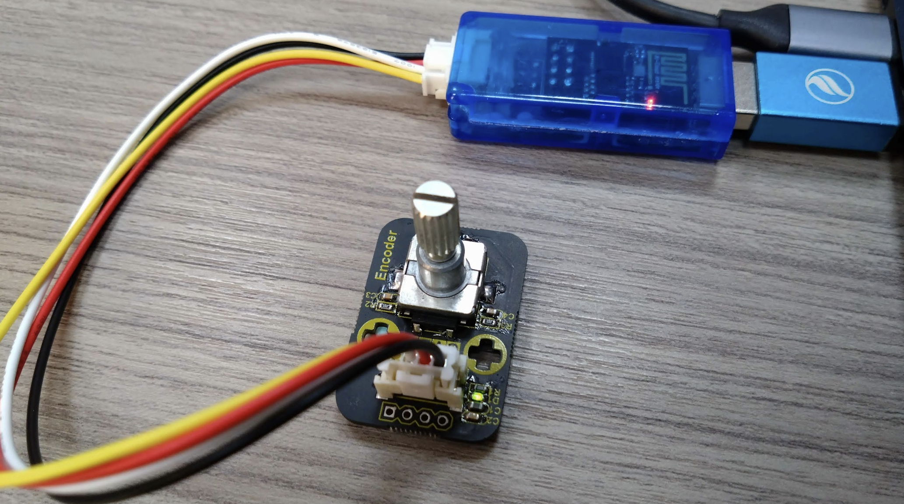

3.Grove dongle #

Grove dongle #
Grove Pin 接法 #
一隻訊號腳 #
IO0 單Pin 訊號腳
兩隻訊號腳 #
IO0 (黃色線) <–> CLK IO2 (白色線) <–> DIO
I2C #
IO0 (黃色線) <–> SCL IO2 (白色線) <–> SDA
Scan I2C #
1from machine import I2C, Pin
2
3i2c = I2C(scl=Pin(0), sda=Pin(2), freq=100000)
4
5print('Scan i2c bus...')
6while True:
7 devices = i2c.scan()
8 if len(devices) == 0:
9 print("No i2c device !")
10 else:
11 print('i2c devices found:',len(devices))
12 break;
13
14for device in devices:
15 print("Decimal address: ",device," | Hexa address: ",hex(device))傳感器使用範例 #
OLED 0.96 (64x128) #
1from machine import Pin,I2C
2import ssd1306
3
4i2c = I2C(scl=Pin(0), sda=Pin(2), freq=100000) #Init i2c
5lcd=ssd1306.SSD1306_I2C(128,64,i2c) #create LCD object,Specify col and row
6lcd.text("ESP8266",0,0)
7lcd.text("test",0,16)
8lcd.text("123456",0,32)
9lcd.show()Buzzer #
1import machine , time
2
3def play(freq=300,delay=0.1):
4 pin25 = machine.PWM(machine.Pin(0), duty=512)
5 pin25.freq(freq)
6 time.sleep(delay)
7 machine.PWM(machine.Pin(0), duty=0)
8
9play(262,0.2)
10play(294,0.2)
11play(330,0.2)DHT11 #

1import dht , machine
2
3dht11 = dht.DHT11(machine.Pin(0))
4dht11.measure()
5temp = dht11.temperature() # eg. 23 (°C)
6humi = dht11.humidity()
7print("temp:%s , humi:%s"%(temp,humi))TM1637 #
1from TM1637 import TM1637
2from machine import Pin
3tm = TM1637(clk=Pin(2), dio=Pin(0))
4tm.show('1234', True) # ':' True | FalseWS2812 #

1import machine, neopixel
2p = machine.Pin(0)
3n = neopixel.NeoPixel(p, 4)
4for i in range(4):
5 n[i] = (i * 20+10, i*2, 22)
6n.write()Rotary #

1import time
2from rotary_irq_esp import RotaryIRQ
3
4r = RotaryIRQ(pin_num_clk=0,
5 pin_num_dt=2,
6 min_val=0,
7 max_val=5,
8 reverse=False,
9 range_mode=RotaryIRQ.RANGE_WRAP)
10
11val_old = r.value()
12while True:
13 val_new = r.value()
14
15 if val_old != val_new:
16 val_old = val_new
17 print('result =', val_new)
18
19 time.sleep_ms(50)HC-SR04 #

1from hcsr04 import HCSR04
2from time import sleep
3
4sensor = HCSR04(trigger_pin=0, echo_pin=2, echo_timeout_us=10000)
5
6while True:
7 distance = sensor.distance_cm()
8 print('Distance:', distance, 'cm')
9 sleep(1)紅外線溫度感測 #

1import time
2import mlx90614
3from machine import I2C, Pin
4
5i2c = I2C(scl=Pin(0), sda=Pin(2))
6sensor = mlx90614.MLX90614(i2c)
7
8while True:
9 print(sensor.read_ambient_temp(), sensor.read_object_temp())
10 time.sleep_ms(500)HMC5883L (gy271) #
(橙色) SCL –> IO0 (黃色) SDA –> IO2
1from hmc5883l import HMC5883L
2
3sensor = HMC5883L(scl=0, sda=2)
4
5for i in range(1000):
6 x, y, z = sensor.read()
7 print(sensor.format_result(x, y, z))ADXL345 三軸加速 #
1import time, adxl345
2from machine import Pin,I2C
3
4i2c = I2C(scl=Pin(0),sda=Pin(2), freq=10000)
5adx = adxl345.ADXL345(i2c)
6time.sleep(1.5)
7
8while True:
9 x=adx.xValue
10 y=adx.yValue
11 z=adx.zValue
12 #print('The acceleration info of x, y, z are:%d,%d,%d'%(x,y,z))
13 roll,pitch = adx.RP_calculate(x,y,z)
14 print('roll=',roll,',pitch=',pitch)
15 time.sleep_ms(50)MP3 播放器 #
1from dfplayermini import Player
2from time import sleep
3
4music = Player()
5music.volume(15)
6music.play(2)
7sleep(15)
8music.stop() 待測試補上範例 Code #
溫濕度 #

APDS-9930 #
{kind=link}
Servo #
LCD1602 #

1# https://github.com/dhylands/python_lcd/blob/master/lcd/lcd_api.py
2from time import sleep_ms, ticks_ms
3from machine import I2C, Pin
4from i2c_lcd import I2cLcd
5
6# The PCF8574 has a jumper selectable address: 0x20 - 0x27
7DEFAULT_I2C_ADDR = 0x3F
8
9def test_main():
10 """Test function for verifying basic functionality."""
11 print("Running test_main")
12 i2c = I2C(scl=Pin(5), sda=Pin(4), freq=100000)
13 lcd = I2cLcd(i2c, DEFAULT_I2C_ADDR, 2, 16)
14 lcd.putstr("It Works!\nSecond Line")
15 sleep_ms(3000)
16 lcd.clear()
17 count = 0
18 while True:
19 lcd.move_to(0, 0)
20 lcd.putstr("%7d" % (ticks_ms() // 1000))
21 sleep_ms(1000)
22 count += 1
23 if count % 10 == 3:
24 print("Turning backlight off")
25 lcd.backlight_off()
26 if count % 10 == 4:
27 print("Turning backlight on")
28 lcd.backlight_on()
29 if count % 10 == 5:
30 print("Turning display off")
31 lcd.display_off()
32 if count % 10 == 6:
33 print("Turning display on")
34 lcd.display_on()
35 if count % 10 == 7:
36 print("Turning display & backlight off")
37 lcd.backlight_off()
38 lcd.display_off()
39 if count % 10 == 8:
40 print("Turning display & backlight on")
41 lcd.backlight_on()
42 lcd.display_on()
43
44#if __name__ == "__main__":
45test_main()